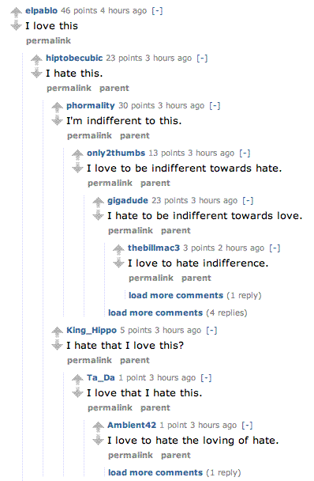

Website Evaluation - Reddit - Functionality
The reddit header
Instantly understand what the site is about?
It is not entirely apparent what reddit is or how it works. This may be by design to provide an exclusive feeling to its users.
Understand what you can do there?
Your possible options for article and site actions are clear. You can read news, pick a subreddit, search, or submit a link.
"Look & feel" entice you to stay and explore?
The look and feel is simple and non-intrusive. This leaves a large focus on content and outbound links. Users often comment that reddit's design allows them to browse from locations where luxury browsing may not be accepted, such as at work.
Main functions easily accessible? Easy to use?
A form to search reddit is always present on the right sidebar, as are links to submit articles and create a subreddit.
Links clear where they will take you?
The use of hyperlinked action words rather than icons provide a better sense of function and navigation.
Instant visual hierarchy? Or visually too busy?
There is only one row of tabs, making for a clear two leveled hierarchy. There are two columns, with one substantially larger than the other indicating that it has superior content. The larger left column is used to display the news feed and discussion. The right column acts as a sort of toolbox.
Text easy to read?
All text is in a sans serif font. Although small in some areas, text is readable. There are issues with complicated threaded discussion, where multiple threaded replies to posts may be hard to follow. Reddit attempts to use visual aids (such as a dotted vertical line and indentation) to solve this problem.
A reddit comment thread
Graphics easy to understand?
There are an extremely limited amount of graphics on reddit. The up and down arrows are the most popular icons and have a clear function of upvoting and downvoting an article.
Large site has a site map, index or search function?
If the user is browsing within a subreddit, they can choose to limit the search within the subreddit. All extra links are listen in columns at the bottom of the page.
Search within the Rutgers reddit
Help available and useful?
A link to help is found at the footer of the page.
Download times reasonable?
Because graphics are limited download times within reddit.com are quick. Articles with an extremely large amount of comments may have a long load time.